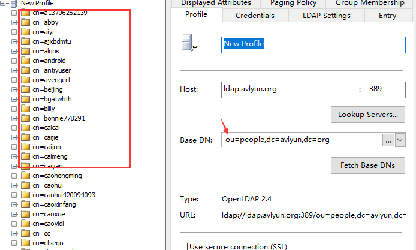
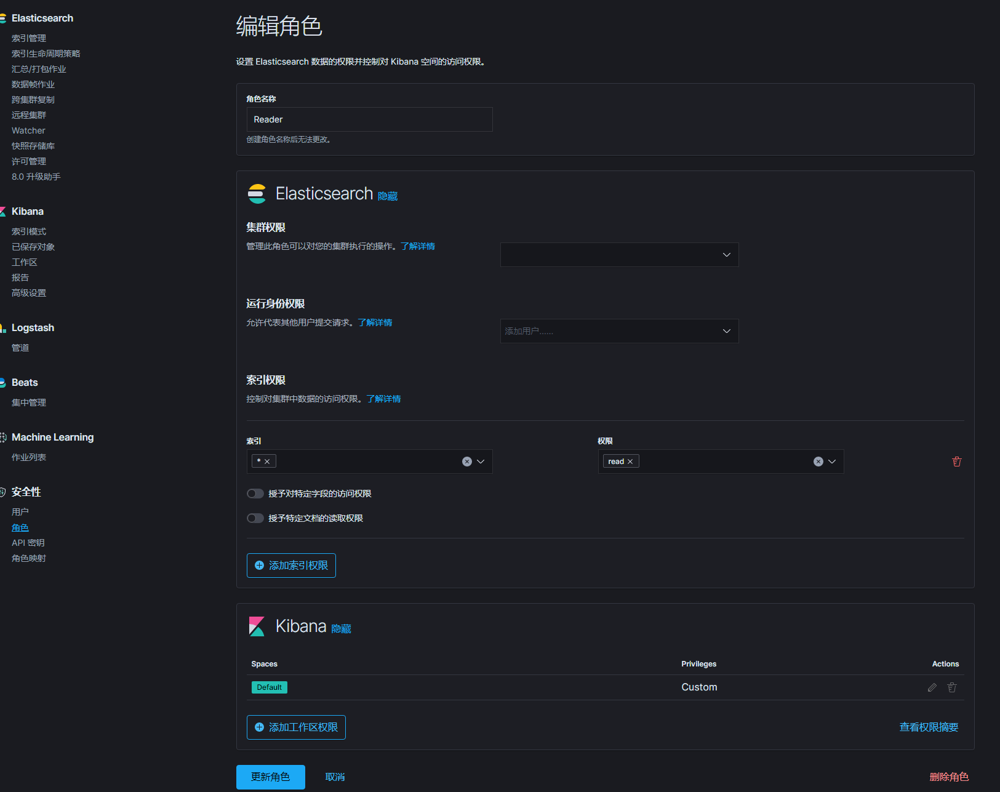
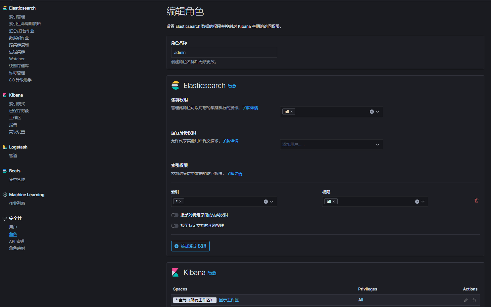
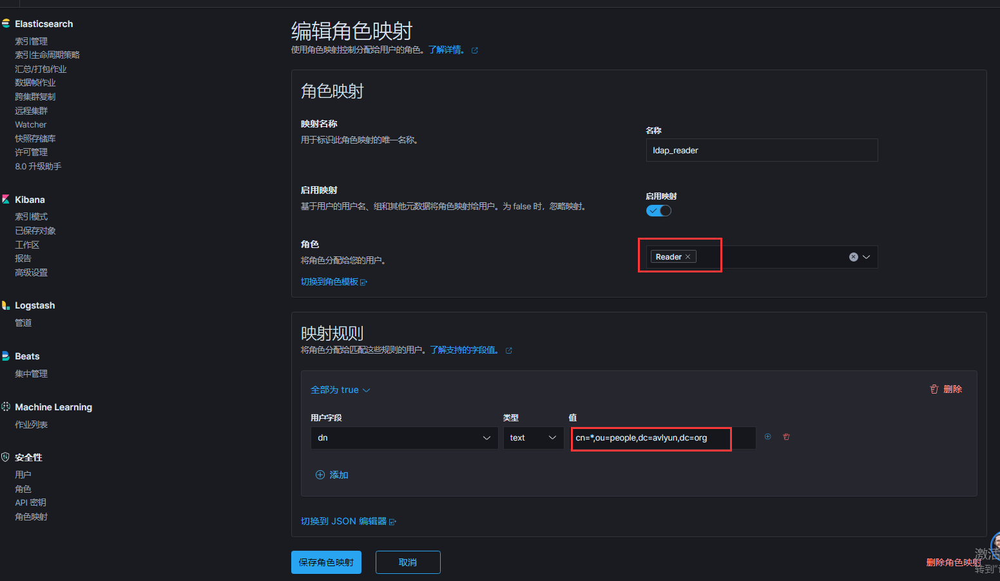
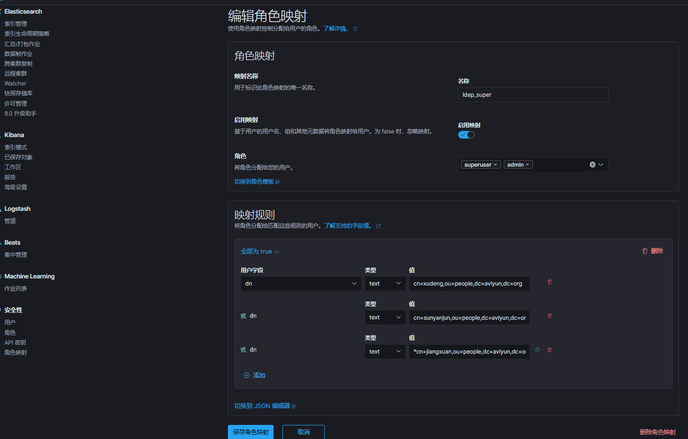
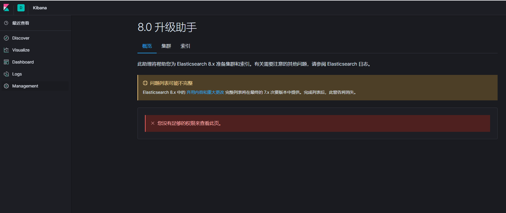

项目背景
使用ElasticSearch实现公司LDAP登录认证，设置ROLE规则，实现权限、用户管控
需要使用到Xpack插件
注意没有采用SSL和TLS
ElasticSearch配置
/data1/elastic/config/elasticsearch.yml增加配置：
xpack.security.enabled: true
xpack:
security:
authc:
realms:
native: # 需要设置多个realms，同时使用es内置本地认证和ladp认证
local: # real的名字，任意取一个
order: 0
ldap:
ldap1:
order: 1
url: "ldap://ldap.xxxyun.org:389"
# bind_dn: "cn=admin,dc=xxxyun,dc=org" #因为是只读的，所以这个可以不用配置ladp管理员账号
user_search:
base_dn: "ou=people,dc=xxxyun,dc=org"
filter: "(cn={0})"
# attribute: cn #配置这个会报与filter无法合并配置的错误
group_search:
base_dn: "ou=people,dc=xxxyun,dc=org"
files:
role_mapping: "/data1/elastic/config/role_mapping.yml"
unmapped_groups_as_roles: false
# ssl.verification_mode: certificate #会报错，invalid credentials
/data1/elastic/config/role_mapping.yml可配置也可不配置，可以在kibana页面进行角色关系映射
重启ElasticSearch服务
LDAP
简单说明一下：LDAP是树形结构base_dn: "ou=people,dc=xxxyun,dc=org，通过这个可以获取到所有的用户目录
也不需要设置bind_dn，因为可以匿名访问cn=everybody,ou=people,dc=xxxyun,dc=org，就是一个dn（Distinguish Name），是一个唯一ID，能看出来这个是一个目录树的路径，所以能唯一标识entry信息（类似数据库里的一条）

验证结果
[root@log ~]# curl -u everybody:xxxx http://192.168.16.5:9200/_xpack/security/_authenticate?pretty
# 返回
{
"username" : "everybody",
"roles" : [ # 默认情况下，这里的role会是空的
"Reader",
"admin",
"superuser"
],
"full_name" : null,
"email" : null,
"metadata" : {
"ldap_dn" : "cn=everybody,ou=people,dc=xxxyun,dc=org", # everybody账户的dn
"ldap_groups" : [ ]
},
"enabled" : true,
"authentication_realm" : {
"name" : "ldap1", # 能看到使用ldap方式获取的用户
"type" : "ldap" # 是ldap的类型
},
"lookup_realm" : {
"name" : "ldap1",
"type" : "ldap"
}
}kibana设置权限及角色映射
创建一个只读的Role

创建一个admin的Role

设置LDAP用户与Role的映射关系（只读用户）
注意这两个参数，cn=*代表默认情况下所有用户都是只读的权限

设置LDAP指定用户添加superuser权限

使用Reader用户登录验证权限

遇到的问题
- 配置了LDAP以后，ES本地的用户无法认证
官方说法：本地用户认证
The native realm is available by default when no other realms are configured. If other realm settings have been configured in elasticsearch.yml, you must add the native realm to the realm chain.
“当未配置其他领域时，默认情况下本机领域可用。
如果在elasticsearch.yml中配置了其他领域设置，则必须将本机领域添加到领域链”
需要添加配置
xpack:
security:
authc:
realms:
native:
local:
order: 0- 日志有警告
[2020-04-27T14:59:46,304][WARN ][o.e.x.s.a.AuthenticationService] [node_16_5] Authentication to realm ldap1 failed - authenticate failed (Caused by LDAPException(resultCode=49 (invalid credentials), errorMessage=’invalid credentials’, ldapSDKVersion=4.0.8, revision=28812))
修改elasticsearch.yml配置
去掉参数：ssl.verification_mode: certificate本博客所有文章除特别声明外，均采用 CC BY-SA 3.0协议 。转载请注明出处！